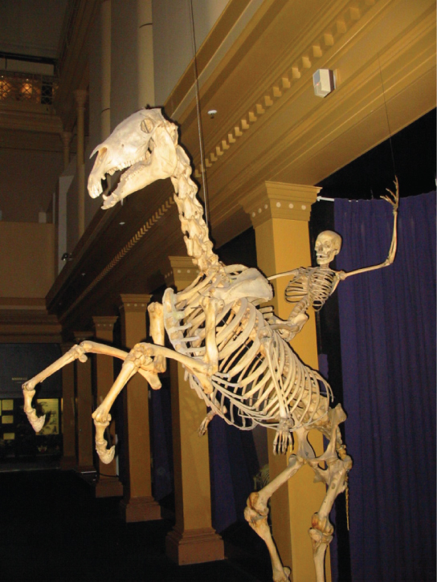
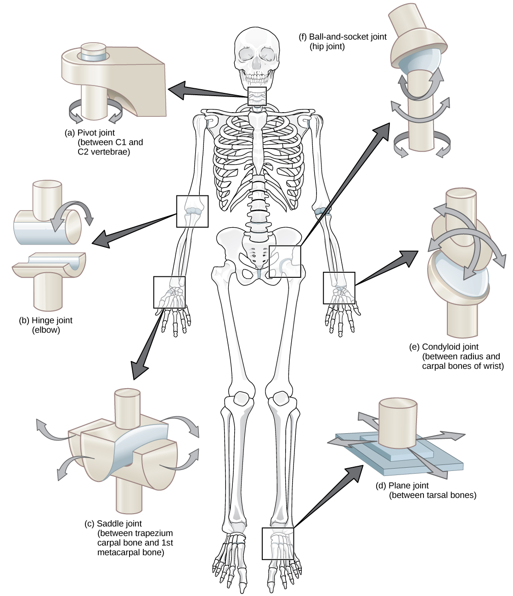

An endoskeleton is a skeleton that consists of hard, mineralized structures located within the soft tissue of organisms. Endoskeletons provide support for the body, protect internal organs, and allow for movement through contraction of muscles attached to the skeleton.

Figure 38.4.
The skeletons of humans and horses are examples of endoskeletons. (credit: Ross Murphy)
The human skeleton is an endoskeleton that consists of 206 bones in the adult. It has five main functions: providing support to the body, storing minerals and lipids, producing blood cells, protecting internal organs, and allowing for movement. The skeletal system in vertebrates is divided into the axial skeleton (which consists of the skull, vertebral column, and rib cage), and the appendicular skeleton (which consists of the shoulders, limb bones, the pectoral girdle, and the pelvic girdle).
Link to Learning
Visit the interactive body site to build a virtual skeleton: select "skeleton" and click through the activity to place each bone.
The axial skeleton forms the central axis of the body and includes the bones of the skull, ossicles of the middle ear, hyoid bone of the throat, vertebral column, and the thoracic cage (ribcage) (Figure 38.5). The function of the axial skeleton is to provide support and protection for the brain, the spinal cord, and the organs in the ventral body cavity. It provides a surface for the attachment of muscles that move the head, neck, and trunk, performs respiratory movements, and stabilizes parts of the appendicular skeleton.
Figure 38.5.
The axial skeleton consists of the bones of the skull, ossicles of the middle ear, hyoid bone, vertebral column, and rib cage. (credit: modification of work by Mariana Ruiz Villareal)
The appendicular skeleton is composed of the bones of the upper limbs (which function to grasp and manipulate objects) and the lower limbs (which permit locomotion). It also includes the pectoral girdle, or shoulder girdle, that attaches the upper limbs to the body, and the pelvic girdle that attaches the lower limbs to the body (Figure 38.10).

Figure 38.10.
The appendicular skeleton is composed of the bones of the pectoral limbs (arm, forearm, hand), the pelvic limbs (thigh, leg, foot), the pectoral girdle, and the pelvic girdle. (credit: modification of work by Mariana Ruiz Villareal)
The mineral salts primarily include hydroxyapatite, a mineral formed from calcium phosphate. Calcification is the process of deposition of mineral salts on the collagen (protein) fiber matrix that crystallizes and hardens the tissue. The process of calcification only occurs in the presence of collagen fibers.
The bones of the human skeleton are classified by their shape: long bones, short bones, flat bones, sutural bones, sesamoid bones, and irregular bones (Figure 38.16).

Figure 38.16.
Shown are different types of bones: flat, irregular, long, short, and sesamoid.
Bones are considered organs because they contain various types of tissue, such as blood, connective tissue, nerves, and bone tissue. Osteocytes, the living cells of bone tissue, form the mineral matrix of bones. There are two types of bone tissue: compact and spongy.
Compact bone (or cortical bone) forms the hard external layer of all bones and surrounds the medullary cavity, or bone marrow. It provides protection and strength to bones. Compact bone tissue consists of units called osteons or Haversian systems. Osteons are cylindrical structures that contain a mineral matrix and living osteocytes connected by canaliculi, which transport blood. They are aligned parallel to the long axis of the bone. Each osteon consists of lamellae, which are layers of compact matrix that surround a central canal called the Haversian canal. The Haversian canal (osteonic canal) contains the bone’s blood vessels and nerve fibers (Figure 38.19). Osteons in compact bone tissue are aligned in the same direction along lines of stress and help the bone resist bending or fracturing. Therefore, compact bone tissue is prominent in areas of bone at which stresses are applied in only a few directions.
Art Connection

Figure 38.19.
Compact bone tissue consists of osteons that are aligned parallel to the long axis of the bone, and the Haversian canal that contains the bone’s blood vessels and nerve fibers. The inner layer of bones consists of spongy bone tissue. The small dark ovals in the osteon represent the living osteocytes. (credit: modification of work by NCI, NIH)
Which of the following statements about bone tissue is false?
Compact bone tissue is made of cylindrical osteons that are aligned such that they travel the length of the bone.
Haversian canals contain blood vessels only.
Haversian canals contain blood vessels and nerve fibers.
Spongy tissue is found on the interior of the bone, and compact bone tissue is found on the exterior.
Whereas compact bone tissue forms the outer layer of all bones, spongy bone or cancellous bone forms the inner layer of all bones. Spongy bone tissue does not contain osteons that constitute compact bone tissue. Instead, it consists of trabeculae, which are lamellae that are arranged as rods or plates. Red bone marrow is found between the trabuculae. Blood vessels within this tissue deliver nutrients to osteocytes and remove waste. The red bone marrow of the femur and the interior of other large bones, such as the ileum, forms blood cells.
Spongy bone reduces the density of bone and allows the ends of long bones to compress as the result of stresses applied to the bone. Spongy bone is prominent in areas of bones that are not heavily stressed or where stresses arrive from many directions. The epiphyses of bones, such as the neck of the femur, are subject to stress from many directions. Imagine laying a heavy framed picture flat on the floor. You could hold up one side of the picture with a toothpick if the toothpick was perpendicular to the floor and the picture. Now drill a hole and stick the toothpick into the wall to hang up the picture. In this case, the function of the toothpick is to transmit the downward pressure of the picture to the wall. The force on the picture is straight down to the floor, but the force on the toothpick is both the picture wire pulling down and the bottom of the hole in the wall pushing up. The toothpick will break off right at the wall.
The neck of the femur is horizontal like the toothpick in the wall. The weight of the body pushes it down near the joint, but the vertical diaphysis of the femur pushes it up at the other end. The neck of the femur must be strong enough to transfer the downward force of the body weight horizontally to the vertical shaft of the femur (Figure 38.20).

Figure 38.20.
Trabeculae in spongy bone are arranged such that one side of the bone bears tension and the other withstands compression.
Link to Learning
View micrographs of musculoskeletal tissues as you review the anatomy.
The point at which two or more bones meet is called a joint, or articulation. Joints are responsible for movement, such as the movement of limbs, and stability, such as the stability found in the bones of the skull.
There are two ways to classify joints: based on their structure or based on their function. The structural classification divides joints into fibrous, cartilaginous, and synovial joints depending on the material composing the joint and the presence or absence of a cavity in the joint. The bones of fibrous joints are held together by fibrous connective tissue. There is no cavity, or space, present between the bones, so most fibrous joints do not move at all, or are only capable of minor movements. The joints between the bones in the skull and between the teeth and the bone of their sockets are examples of fibrous joints (Figure 16.16a).
Cartilaginous joints are joints in which the bones are connected by cartilage (Figure 16.16b). An example is found at the joints between vertebrae, the so-called “disks” of the backbone. Cartilaginous joints allow for very little movement.
Synovial joints are the only joints that have a
space between the adjoining bones (Figure 16.16c).
This space is referred to as the joint cavity and is filled with
fluid. The fluid lubricates the joint, reducing friction between
the bones and allowing for greater movement. The ends of the bones
are covered with cartilage and the entire joint is surrounded by a
capsule. Synovial joints are capable of the greatest movement of
the joint types. Knees, elbows, and shoulders are examples of
synovial joints.

Figure 38.26.
Different types of joints allow different types of movement. Planar, hinge, pivot, condyloid, saddle, and ball-and-socket are all types of synovial joints.
Link to LearningWatch this animation
showing the six types of synovial joints.
Question to answer: